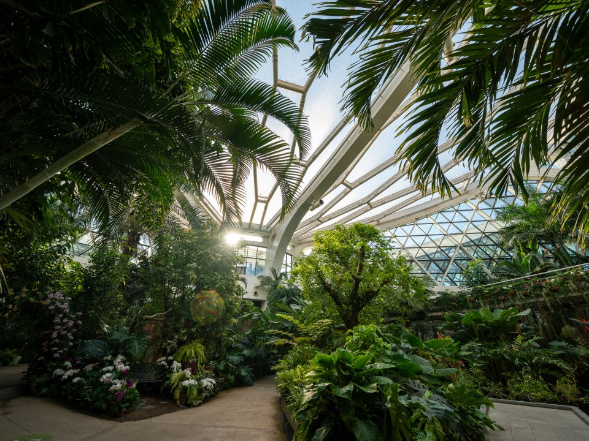

서울식물원 온실 / 마곡
큰 주차장 온실의 가장 직접적인 공간 레퍼런스. 기후대별 식재, 스카이워크, 포토존, 관람 동선 분리를 확인.
- 키 큰 수목과 하부 식재의 레이어 구성
- 습윤 구역과 건조 구역의 분위기 차이
- 관람객 동선에서 식재를 보호하는 방식
- 설명 패널, 포토 지점, 휴식 지점 배치
사진/참고: 월간 THE LIVING, “서울식물원 온실” 기사. https://www.theliving.co.kr/news/articleView.html?idxno=23480